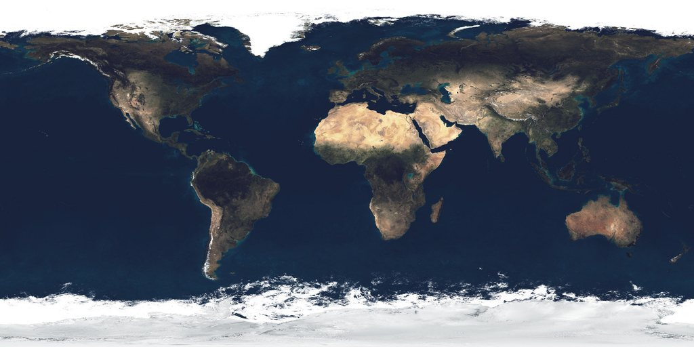
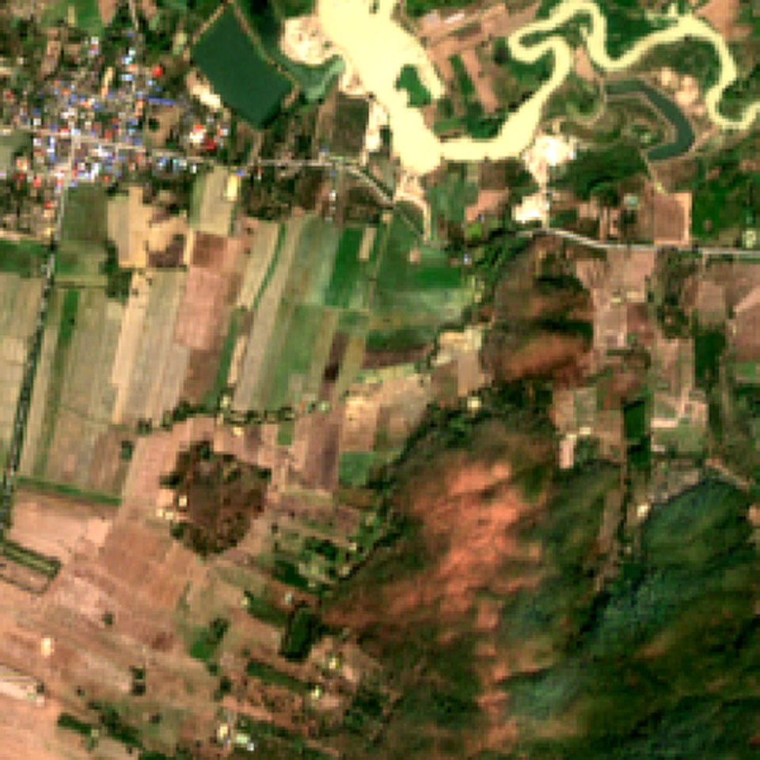
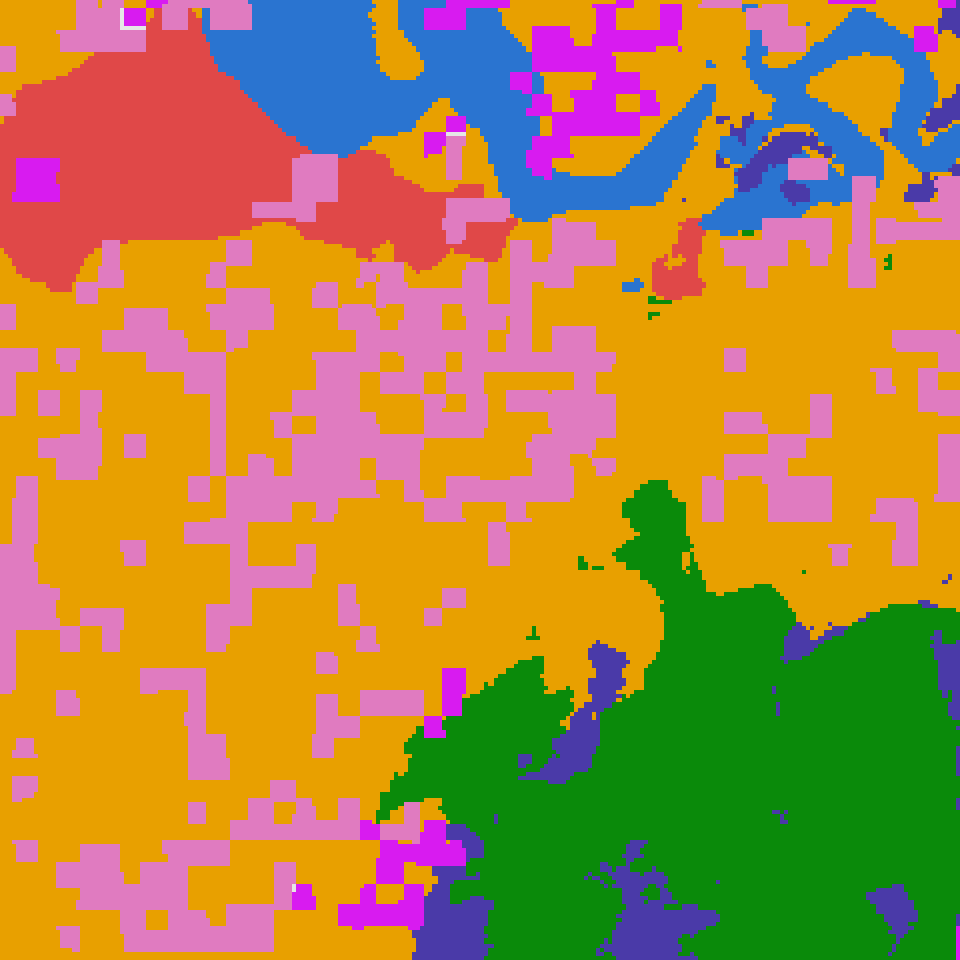
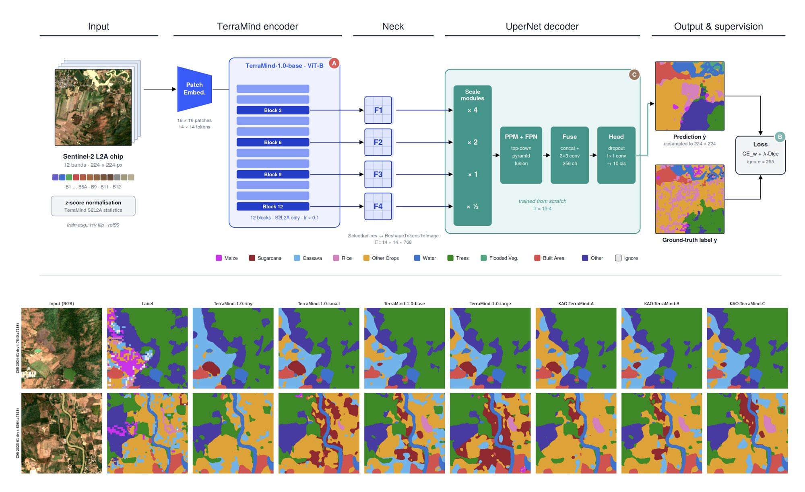
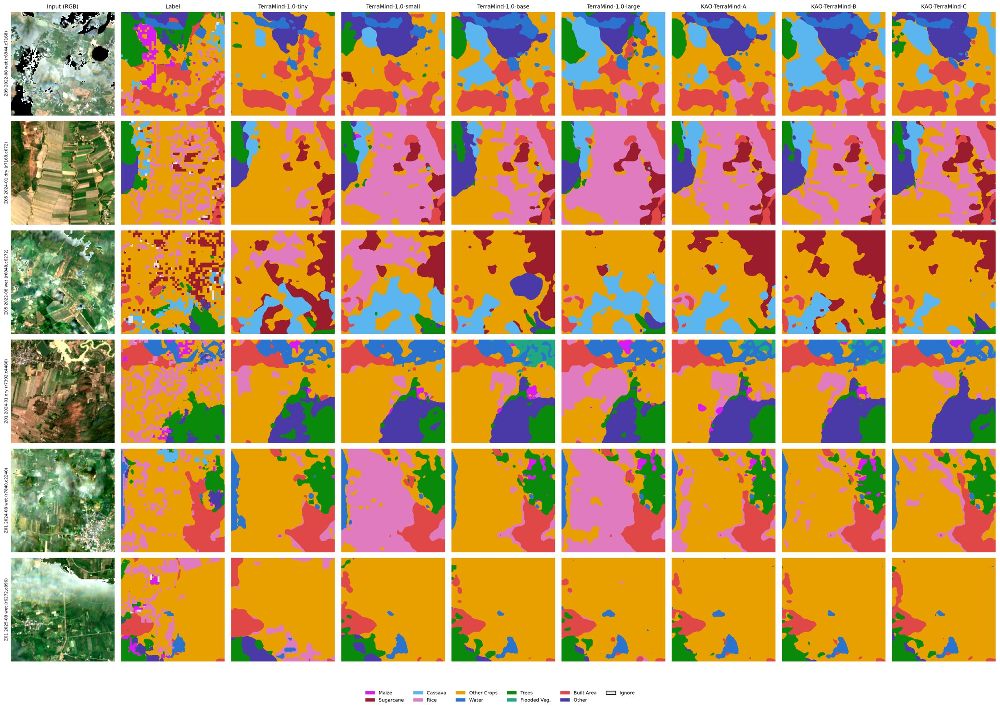

A
Optimisation
Adapts the pre-trained encoder more strongly to the target domain.
backbone lr ×0.1 → ×0.3
weight decay 0.01 → 0.05GeoAI lab based in Bangkok, Thailand
Ethical AI research at global scale. We use Earth-observation data and responsible AI to protect our planet.

drag to spin the Earth Fig. 0. NASA Blue Marble. Drag the globe.PBYAIL is a GeoAI research lab in Bangkok that advances AI for Earth observation, cadastral systems and geospatial intelligence.
We build systems that are autonomy-driven, interpretable and designed for real-world impact at national scale.
Satellite and aerial imagery analysis for spatial decision-making.
Novel architectures for vision and segmentation tasks.
AI-powered land administration and cadastral digitization.
Ethical, interpretable systems with societal benefit.

a 2.2 km patch of ThailandDeep learning systems for satellite and aerial image interpretation at national scale, enabling precise land-use mapping and environmental monitoring.
pixels to meaningFusing heterogeneous data sources (imagery, text, geospatial signals) into unified representations for richer environmental understanding.
images + text + mapsGenerative diffusion models for remote sensing synthesis, data augmentation and uncertainty-guided segmentation in high-stakes applications.
noise to picturesTurning raw geographic data into actionable intelligence for land administration, urban planning and infrastructure decisions.
maps that actAI deployed in government and civic contexts that is fair, transparent and aligned with human values. AI for social good.
AI with mannersInterfaces and models for natural, intuitive collaboration between people and intelligent systems in professional workflows.
humans in the loopfun fact
The lab is named after the family name of its founder, Dr. Teerapong Panboonyuen.
Targeted adaptation of geospatial foundation models for dense prediction.
Three variants of TerraMind-1.0-base, each changing exactly one factor (optimisation, objective or decoder), benchmarked against TerraMind tiny, small, base and large on 10-class crop and land-cover mapping over Thailand.

Drag to compare. Sentinel-2 chip (left) and its 10-class label (right); each class has its own colour.
A 12-band Sentinel-2 L2A chip is tokenised and encoded by TerraMind-1.0-base. Features from four transformer blocks form a pyramid that a UperNet decoder turns into a 10-class map. Every other setting (data, seed, schedule, sampler) is identical, so each gain is attributable.

Adapts the pre-trained encoder more strongly to the target domain.
backbone lr ×0.1 → ×0.3
weight decay 0.01 → 0.05Emphasises overlap for rare crop classes.
Dice weight 0.5 → 1.0
CE with √inverse-frequency weightsA wider UperNet with deeper-biased features.
channels 256 → 512 · dropout 0.1 → 0.2
taps 3·6·9·12 → 4·7·10·12All models fine-tuned and tested on the same 13,974 chips (Tesla T4, fp16 autocast).
Swipe the table sideways to see every column.
| Model | Params (M) | GFLOPs | OA (%) | mIoU (%) | F1 macro (%) | Kappa | img/s |
|---|---|---|---|---|---|---|---|
| TerraMind-1.0-tiny | 13.31 | 22.84 | 75.00 | 37.18 | 48.61 | 0.6534 | 538.8 |
| TerraMind-1.0-small | 31.08 | 30.11 | 77.75 | 39.05 | 50.58 | 0.6861 | 415.5 |
| TerraMind-1.0-base | 99.37 | 57.66 | 78.44 | 40.82 | 52.57 | 0.6982 | 245.8 |
| TerraMind-1.0-large | 320.22 | 146.71 | 76.34 | 40.13 | 52.04 | 0.6753 | 92.2 |
| KAO-TerraMind-A | 99.37 | 57.66 | 78.61 | 40.81 | 52.48 | 0.6996 | 245.6 |
| KAO-TerraMind-B | 99.37 | 57.66 | 78.31 | 40.97 | 52.74 | 0.6965 | 246.0 |
| KAO-TerraMind-C | 121.74 | 118.06 | 78.90 | 41.13 | 52.80 | 0.7036 | 132.5 |
The gains over TerraMind-base are modest (C: +0.31 mIoU, +0.46 OA) and come with a trade-off: the wider decoder roughly doubles GFLOPs and lowers throughput. Variant A is on par with the base model in mIoU.

A 10-class crop and land-cover dataset over Thailand: maize, sugarcane, cassava, rice, other crops, water, trees, flooded vegetation, built area and other. Sentinel-2 L2A, 12 bands, dry (January) and wet (August) scenes, split spatially.
We thank the Geo-Informatics and Space Technology Development Agency (GISTDA), Thailand, for supporting the dataset. It is private and not publicly released; code and checkpoints are shared, the data is not.
@article{panboonyuen2026kaoterramind,
title = {KaoTerraMind: Targeted Adaptation of Geospatial Foundation Models for Dense Prediction},
author = {Panboonyuen, Teerapong},
year = {2026},
note = {Manuscript in preparation for submission to CVPR 2027},
url = {https://github.com/kaopanboonyuen/KAO-TerraMind}
}

Teerapong Panboonyuen · 2026 · github.com/kaopanboonyuen/KAO-TerraMind
Teerapong Panboonyuen · IEEE Transactions on Geoscience and Remote Sensing · DOI 10.1109/TGRS.2025.3621738
Teerapong Panboonyuen · arXiv:2603.18508 · 173 pages · DOI 10.48550/arXiv.2603.18508
Teerapong Panboonyuen · European Journal of Remote Sensing, Vol. 58, No. 1 · Taylor & Francis
Teerapong Panboonyuen · IEEE Access · IEEE
Teerapong Panboonyuen · Remote Sensing, Vol. 15, No. 21, p. 5124 · MDPI
let’s work together
We welcome collaborations with researchers, institutions and industry partners working at the intersection of AI and geospatial intelligence.